We start by loading a couple of useful packages. Please install them using install.packages(“name_of_the_pacakge”) if not already done.
library(tidyverse) # advanced data manipulation and vizualisation
library(mnormt) # Generation of Gaussian distributions
library(Rtsne) # t-SNE
library(cluster) # Tools for clustering
library(dimRed) # Dimensionality reduction package
library(umap) # UMAP
library(reticulate) # Package to mix Python and R codeThis exercise aims at comparing three non-linear dimensionality reduction techniques: t-SNE, Isomap, and UMAP.
Let us first create an artificial dataset composed of 1500 samples generated from 3 different multivariate Gaussian distributions (500 samples each, 10 dimensions) with mean respectively mean1, mean2, mean3 and covariance cov (the same for the 3 distributions). Your dataframe must be in a tibble format with colnames X1, … , X10. You must also add a column containing the cluster label, i.e. the “number” of the distribution the sample belongs to: 1, 2 or 3. You can use the function rmnorm for the package mnormt. Name your dataset df.
#Means of the 3 Gaussian distributions
mean1 = rep(1,10)
mean2 = rep(2,10)
mean3 = rep(3,10)
#Covariance of the 3 Gaussian distributions
cov = 1.5*diag(10)
#Create dataset
distr_list <- lapply(list(mean1,mean2,mean3),
function(x){rmnorm(n = 500, mean = x, varcov = cov)})
df <- do.call(rbind,distr_list) %>%
as.data.frame() %>%
rename_with(~ gsub("V", "X", .x)) %>%
mutate(cluster = factor(rep(1:3,each = 500)))Let us separate the training data \(X\) and the true cluster labels \(y\) for the rest of the analysis:
Separate the data \(X\) and the true data labels \(y\) by running the code below:
X = df %>% dplyr::select(-cluster)
y = df %>% dplyr::select(cluster)Using geom_density, plot the distribution of the data facetted by dimension (X1 to X10) and filled by cluster number.
Hint: you can use pivot_longer to ease the use of facet_wrap as we did in Homework 2.
df %>%
pivot_longer(!cluster, names_to = "dimension", values_to = "x" ) %>%
ggplot(mapping = aes(x = x, group = cluster, fill = cluster)) +
geom_density(alpha = 0.5) +
facet_wrap(~ dimension) +
theme_bw() +
xlab("Dimension") +
ylab("Density") +
theme(legend.position = "bottom") +
labs(title = "Distribution of the samples according to the cluster number",
fill = "Cluster")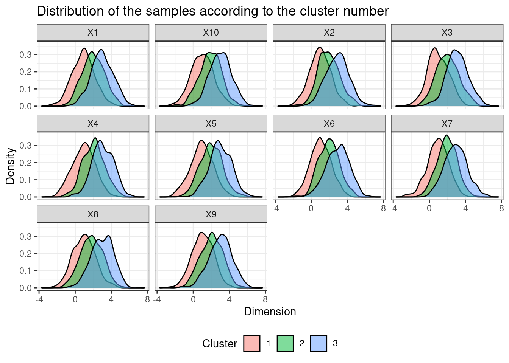
This section aims at presenting t-SNE (t-distributed Stochastic Neighbours Embedding). We present briefly the method below but you can learn more about it by reading the original publication by Van der Maaten, Hinton et al. (2008) here. t-SNE is often used to visualize complex data in 2 dimensions. The idea of t-SNE is to embed the data on a small dimension manifold by respecting data closeness: 2 samples “closed” in the original space are “closed” in the low dimension manifold. The similarity between two samples xi and xj (in this order) in the original data space (high dimensional) stands for the probabily that xi would pick xj at its neighbor under the condition that neighbors are picked in proportion to their probability density under a Gaussian distribution centered at xi.
The variances of the assumed Gaussian distributions rely on the choice of hyperparameter perplexity (in a complex way, see article for details). You can remember that higher perplexity leads to higher variance. To simplify, one often says that the perplexity of the model is a smooth measure of the correct number of neighbors of each datapoint. It typically takes values between 30 and 50.
The similarity between the two embeddings of xi and xj in the lower dimensional manifold, named yi and yj respectively, stands for the probabily that yi would pick yj at its neighbor under the condition that neighbors are picked in proportion to their probability density under a Student t-distribution with one degree of freedom centered at xi.
t-SNE minimizes, using Gradient Descent, a symmetrized version of the Kullback-Leibler divergence between the distributions of similarity in the original data space and in the low dimensional manifold.
tsne <- Rtsne(X, dims = 2, perplexity=30, verbose=FALSE)results_tsne <- cbind(tsne$Y,y)
ggplot(data = results_tsne, mapping = aes(x=`1`, y=`2`, color = cluster)) +
geom_point() +
theme_bw() +
labs(title ="t-SNE results representation",
color = "True label",
x = "",
y="")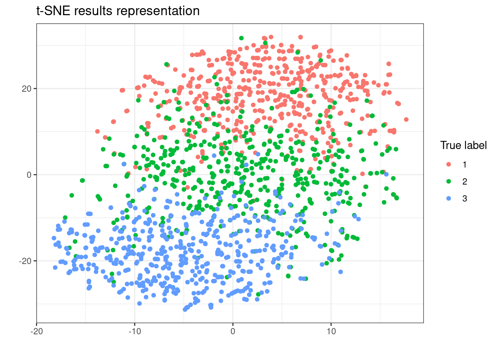
t-SNE seems to create closed embeddings (in terms of Euclidean distance) for data belonging to the same cluster. It is not surprising since t-SNE assumes Gaussian distributions (and the data in each cluster follows such a distribution). The fact that the distributions overlap (see plot of the dataset in the last section) may explain the “errors” made by t-SNE.
Hint: you can use the function rdist from package fields to compute the distance matrix and the function silhouette from package cluster to compute the silhouette coefficient.
#Compute distance matrix
dist <- fields::rdist(tsne$Y, tsne$Y, compact = TRUE)
si <- silhouette(as.numeric(y$cluster),dist)
summary(si)$avg.width## [1] 0.3076457#Plot silhouette coefficients in function of the perplexity
get_silhouette_tsne <- function(perplexity){
tsne <- Rtsne(X, dims = 2, perplexity=perplexity, verbose=FALSE)
dist <- fields::rdist(tsne$Y, tsne$Y, compact = TRUE)
si <-silhouette(as.numeric(y$cluster),dist)
return(summary(si)$avg.width)
}
perplexity_to_test <- c(2,5,10,20,30,40,50,75,100,150,200,300)
si <- sapply(perplexity_to_test, get_silhouette_tsne)
ggplot(data = as.data.frame(cbind(perplexity_to_test,si)),
aes(x = perplexity_to_test, y = si)) +
geom_point() +
theme_bw() +
scale_x_continuous(breaks = perplexity_to_test) +
labs(x = "Perplexity", y = "Silhouette coefficient")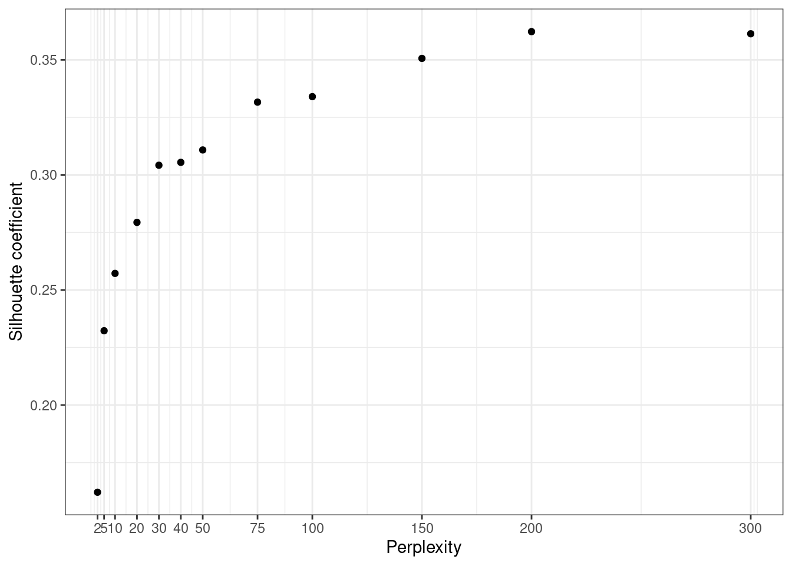
Bigger perplexity leads to better silhouette coefficients on the training data. Yet, bigger perplexity implies a higher variance of the model, meaning that it suits the training data too much and may not be reproducible. Indeed, it may be very sensitive to noise for instance. This corresponds to the concept of overfitting thoroughly described in supervised Machine Learning. The elbow method advocates to set the hyperparameters to the value leading to an elbow in the curve, i.e. after which the curve does not increase much anymore.
In the experiment above we may set the perplexity to a value of 40. Note that t-SNE being a stochastic algorithm, we should run the experiment several times and average the results to have a better estimate of the best value of perplexity.
This section aims at experimenting Isomap method for dimensionality reduction. It is an extension of MDS (MultiDimensional scaling) for geodesic distance. Indeed, points are projected on a neighborhood graph with connections between each point and its K nearest neighbors (in terms of Euclidean distance). Each edge is weighted by the euclidean distance between the two nodes. The geodesic distance between two points is then computed as the sum of the weights of the edges in the shortest path linking the two points (which may be computed with Dijkstra’s algorithm for instance). Isomap then computes the eigenvectors and eigenvalues of the geodesic distance matrix. The embeddings stand for the eigenvectors of the biggest eigenvalues.
isomap_emb <- dimRed::embed(X, "Isomap", .mute = NULL, knn = 10)
data_to_plot = as.data.frame(cbind(isomap_emb@data@data,y))
ggplot(data = data_to_plot,
mapping = aes(x=`iso 1`, y=`iso 2`, color = cluster)) +
geom_point() +
theme_bw() +
labs(title ="Isomap results representation",
color = "True label",
x = "",
y="")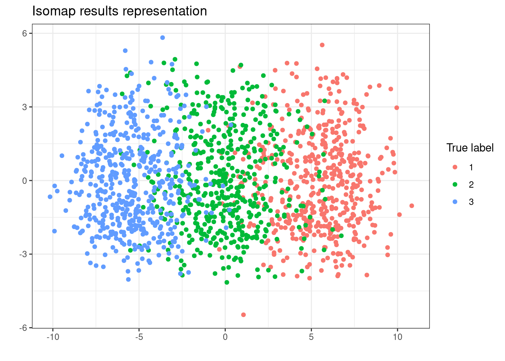
get_silhouette_isomap <- function(knn){
isomap_emb <- dimRed::embed(X, "Isomap", .mute = NULL, knn = knn)
data_embedded <- as.data.frame(isomap_emb@data@data)
dist <- fields::rdist(data_embedded, data_embedded,compact = T)
si <-silhouette(as.numeric(y$cluster),dist)
return(summary(si)$avg.width)
}
knn_to_test <- c(5,7,10,15,20,25,30,40,50,75,100)
si <- sapply(knn_to_test, get_silhouette_isomap)
ggplot(data = as.data.frame(cbind(knn_to_test,si)),
aes(x = knn_to_test, y = si)) +
geom_point() +
theme_bw() +
scale_x_continuous(breaks = knn_to_test) +
labs(x = "Number of nearest neighbors in graph",
y = "Silhouette coefficient")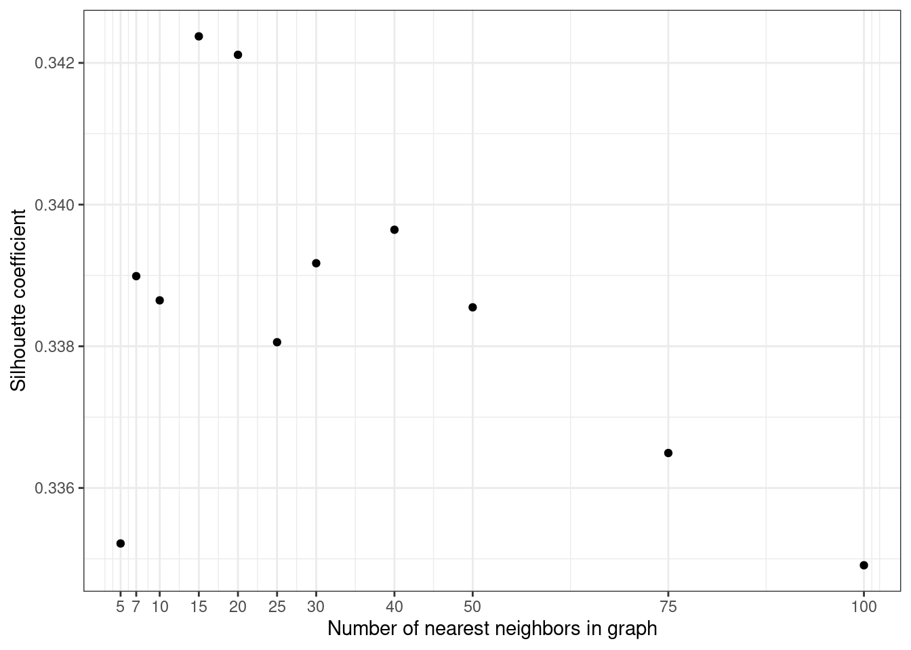
Here both small and high values of number of neighbors lead to poorer sihlouette coefficients. A number of nearest neighbors ebetween 15 and 25 seems to be a good trade-off. (The result varies a lot with the instance of the dataset).
Let us have a look at a third and last method: UMAP (Uniform Manifold Approximation and Projection). UMAP assumes that data is uniformly distributed on Riemannian manifolds. It learns a lower-dimensional manifold which retains the topological structure of the Riemannian manifolds of the original data. See this publication for more details.
df_umap = umap(X)
data_to_plot = as.data.frame(cbind(df_umap$layout,y))
ggplot(data = data_to_plot,
mapping = aes(x=`1`, y=`2`, color = cluster)) +
geom_point() +
theme_bw() +
labs(title ="UMAP results representation",
color = "True label",
x = "",
y="")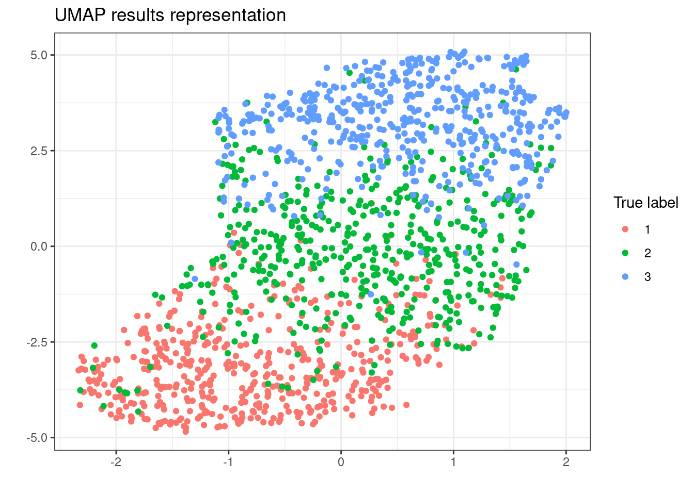
get_silhouette_umap <- function(K){
custom.config = umap.defaults
custom.config$n_neighbors = K
df_umap = umap(X,custom.config)
dist <- fields::rdist(df_umap$layout, df_umap$layout,compact = T)
si <-silhouette(as.numeric(y$cluster),dist)
return(summary(si)$avg.width)
}
knn_to_test <- c(5,7,10,15,20,25,30,40,50,60,75,100)
si <- sapply(knn_to_test, get_silhouette_umap)
ggplot(data = as.data.frame(cbind(knn_to_test,si)),
aes(x = knn_to_test, y = si)) +
geom_point() +
theme_bw() +
scale_x_continuous(breaks = knn_to_test) +
labs(x = "Number of nearest neighbors in graph",
y = "Silhouette coefficient")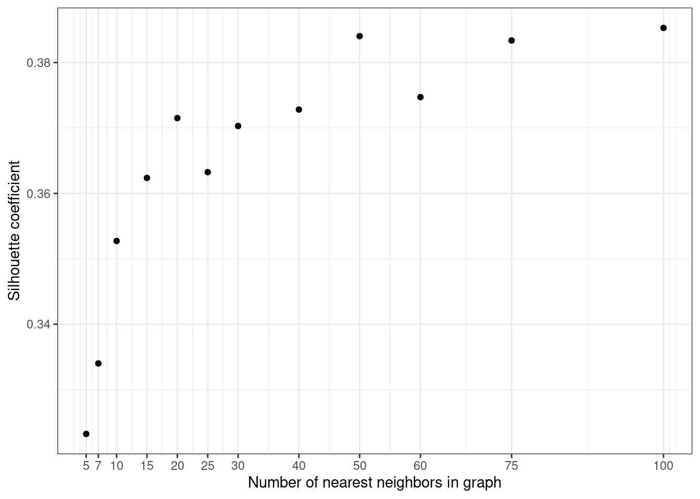
We can use the “elbow method” to determine a good value for K. Here 25 seems to be a good trade-off between high silhouette coefficient and “few” overfitting.
Note that isomap is a stochastic algorithm, meaning that it does not return exactly the same results when launched twice on the same dataset. You can set a seed in the config parameters to cope with this issue. When choosing the hyperparameters, it is highly recommended to run the algorithm several times and to average the results. (Do not do it for this homework: this will be too long to run).
Finally, compute the computation time (using Sys.time() for instance) for each of the 3 methods (t-SNE, Isomap, and UMAP) for different data sizes (from 300 to 1500, each with step 300).
To test different data sizes, you can sample a given number of rows of your dataset with stratification on the true cluster label (this means that you should sample the same number of samples from clusters 1, 2, and 3). Then, plot the computation time with respect to the data size for each of the 3 methods using ggplot. You can use the values of the hyperparameters (perplexity and K) you have found as being the best suited to your data in the last questions. Briefly comment on the results.
get_times <- function(n){
#Sample with stratification
df_n <- df %>%
group_by(cluster) %>%
sample_n(n) %>%
ungroup()
X_n = df_n %>% dplyr::select(-cluster)
Y_n = df_n %>% dplyr::select(cluster)
#t_SNE
start_tsne <- Sys.time()
tsne <- Rtsne(X_n, dims = 2, perplexity= 50)
end_tsne <- Sys.time()
#Isomap
start_isomap <- Sys.time()
isomap <- dimRed::embed(X_n, "Isomap", .mute = NULL, knn = 15)
end_isomap <- Sys.time()
#UMAP
custom.config = umap.defaults
custom.config$n_neighbors = 25
start_umap <- Sys.time()
df_umap = umap(X_n,custom.config)
end_umap <- Sys.time()
return(list(
tsne = as.numeric(end_tsne - start_tsne),
isomap = as.numeric(end_isomap - start_isomap),
umap = as.numeric(end_umap - start_umap)
))
}
n_to_test = c(100,200,300,400,500)
times <- sapply(n_to_test,get_times)
colnames(times) = n_to_test
times %>%
as.data.frame() %>%
rownames_to_column(var = "method") %>%
mutate_at(vars(-method),as.numeric) %>%
pivot_longer(!method,
names_to = "n",
values_to = "time") %>%
mutate(n_sample = 3*as.numeric(n)) %>%
ggplot(mapping = aes(x = n_sample,
y= time,
group = method,
color = method)) +
geom_line() +
theme_bw() +
labs(title = "Computation time in fonction of the method and the number of samples",
caption = "Artificial dataset generated from 3 Gaussian distriubtions",
x = "Number of samples",
y = "Computation time (in sec)",
color = "Method") +
theme(legend.position = "bottom")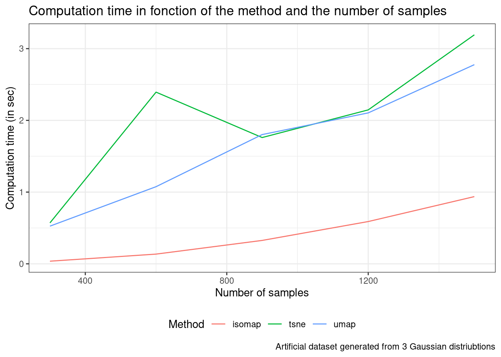
The implementation of t-SNE and UMAP we have used does not scale well for large datasets compared with Isomap.
This exercise focuses on Auto-Encoders (AEs) which are a special type of Neural Networks used for dimensionality reduction. Auto-encoders are neural networks trained to learn a copy of the input.
It is composed of two parts: an encoder and a decoder. The input is first encoded by the encoder, then decoded by the decoder. The output of the encoder stands for the data embeddings. The output of the decoder has the same dimension as the input since the ultimate goal of the AE is to copy the input into the output of the decoder. See the figure below for an illustration.
The encoder and the decoder are composed of layers which are the concatenation of linear layers and non-linear activation function. The weights of the linear layers are trained through backpropagation and gradient descent.
You can read more on AutoEncoders here. Indeed, if you are not familiar with neural networks at all, this book written by Goodfellow, Bengio, Courville et al. is the perfect read for you. Note that you do not need to know more about Auto-Encoders and Neural Networks to go through this exercise.
We will work on a sampled version of the MNIST dataset: 10,000 labeled handwritten digits from 0 to 9.
Please load the sampled dataset by running the code below. X is the matrix of images. The images are composed of 28x28 pixels in greyscale color, meaning that the value of each pixel varies from 0 (white) to 255 (black). There are 10 labels standing for the digit represented in each image. You should see that the classes are roughly balanced with around 1000 samples per class.
X <- read.csv("data/images_mnist_10K.csv", header = FALSE)
y <- read.csv("data/labels_mnist_10K.csv", header = FALSE)Write a code (you can reuse your work from Homework 3) to plot the 12 first images of the dataset on a grid (3 rows of 4 images).
#Create a function to reshape each image as a matrix and rotate it
matrix.rotate <- function(img) {
img <- matrix(img, nrow=28L, byrow=T)
mat <- apply(img, MARGIN = c(1,2), FUN = as.numeric)
t(apply(mat, 2, rev))
}
#Print the 12 first digits
par(mar=c(1,1,1,1)) # Set plot margins
par(mfrow=c(3,4)) # Set a grid : 3 rows and 4 columns
for (idx in 1:12) {
label <- y[idx, ]
image(matrix.rotate(X[idx, ]),
col = grey(level = seq(1, 0, by=-1/255)),
axes=F,
main=label)
}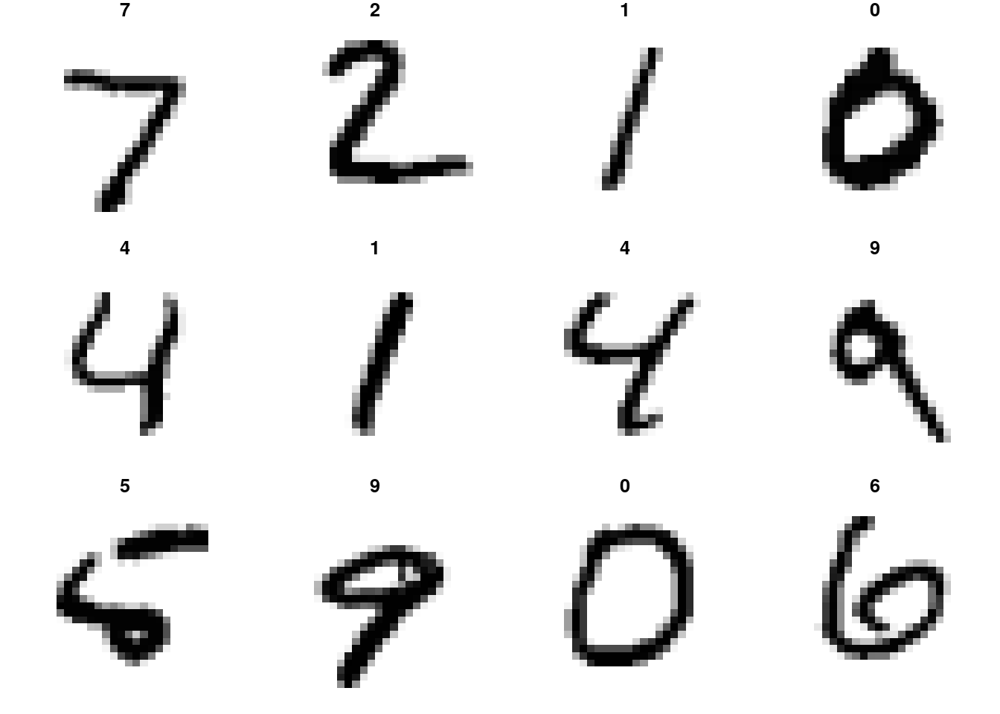
We are going to use Pytorch, which is a Python module, to create an AutoEncoder network and train it in our digits.
We will use the R library “reticulate” to articulate Python and R code. We will typically train the AutoEncoder model in Python and then analyze and plot results in R. You should have already set your environment for reticulate during the “TD”.
Please modify the following code in accordance with your configuration and run it.
reticulate::use_virtualenv("r-reticulate")
reticulate::py_config()## python: /home/jchiquet/.local/share/r-miniconda/envs/r-reticulate/bin/python
## libpython: /home/jchiquet/.local/share/r-miniconda/envs/r-reticulate/lib/libpython3.6m.so
## pythonhome: /home/jchiquet/.local/share/r-miniconda/envs/r-reticulate:/home/jchiquet/.local/share/r-miniconda/envs/r-reticulate
## version: 3.6.11 | packaged by conda-forge | (default, Aug 5 2020, 20:09:42) [GCC 7.5.0]
## numpy: /home/jchiquet/.local/share/r-miniconda/envs/r-reticulate/lib/python3.6/site-packages/numpy
## numpy_version: 1.19.1# py_install("pytorch" , pip=TRUE) # you need to install package pytorch first timeThen load the python modules we are going to use. Please install them locally before if you have not done it already. You can use “pip install name_module” in your terminal for instance.
import torch
import torch.nn as nn
import torch.optim as optim
import sklearn.model_selection as sk
import numpy as npLet us now define the AutoEncoder model. In Pytorch, a model is defined as a class inheriting from nn.Module(). You should at least define an init function which sets the parameters and the network layers and a forward function which corresponds to a forward pass into the network (encoder + decoder).
For this exercise, we will stick to an auto-encoder with one hidden layer (see Figure below). It takes three arguments: the input shape, the hiden shape and the embedding shape. Each layer is followed by ReLU which is a common non-linear activation function used for neural networksPlease complete the following code by replacing the TODO with either input_shape, hidden_shape or embedding_shape.
class AE(nn.Module):
def __init__(self, input_shape, hidden_shape, embedding_shape):
super(AE, self).__init__()
self.encoder = nn.Sequential(
nn.Linear(input_shape,hidden_shape),
nn.ReLU(True),
nn.Linear(hidden_shape,embedding_shape),
nn.ReLU(True))
self.decoder = nn.Sequential(
nn.Linear(embedding_shape,hidden_shape),
nn.ReLU(True),
nn.Linear(hidden_shape,input_shape),
nn.ReLU(True))
def forward(self,x):
x = self.encoder(x)
x = self.decoder(x)
return xOnce the AutoEncoder class is defined, we should create an object of this class and pass it the correct dimension of layers. Please create an instance of the class AE named model with input_shape = 784, hidden_shape = 350 and embedding_shape = 179.
We chose to work with Adam optimizer and a learning rate of 0.001. Finally, the criterion (the loss function that will be minimized) is Mean Squared Error: we will try to minimize the difference between the input and the reconstructed input.
# Create a model from `Autoencoder` class
model = AE(input_shape=784, hidden_shape = 350, embedding_shape = 179)
# Adam optimizer with learning rate 1e-3
optimizer = optim.Adam(model.parameters(), lr=1e-3)
# Mean-squared error loss
criterion = nn.MSELoss()Let us now work on the data: the 10,000 digit samples will be split into a train, a validation and a test set. The train set is used to train the network. The validation set enables us to set the hyperparameters for training. The test set is used to assess the model trained on the train set with the set of best hyperparameters found with the validation set. We use the function train_test_split from sklearn to split the train, validation, and test set. This is a two-step procedure: 1) Split test and train + validation and 2) Split train + validation into train and validation. Please uncomment the following code and fill the argument test_size on the chunck below so that: 60% of 10,000 samples are in train set, 20% are in the validation set, 20% are in the test set.
X_train_val, X_test, y_train_val, y_test = sk.train_test_split(np.array(r.X), np.array(r.y['V1']), test_size= 0.2)
#X_train_val, X_test, y_train_val, y_test = sk.train_test_split(r.X, r.y, test_size=0.2)
X_train, X_val, y_train, y_val = sk.train_test_split(X_train_val, y_train_val, test_size=0.25)
print(X_train.shape)## (6000, 784)print(X_val.shape)## (2000, 784)print(X_test.shape)## (2000, 784)The model is trained for a given number of epochs. An epoch corresponds to a complete pass through the training set. The training set is divided into batches of fixed size. We chose here batches of size 128. Pytorch provides a class of iterable object DataLoader to automatically create the batches.
The validation and test set are not split into batches since they are not used for training: we only convert them to Pytorch tensors.
Please run the code below.
#Create Dataoader objects with will automaticaly create batches for test and train
train_loader = torch.utils.data.DataLoader(
torch.tensor(X_train).float(),
batch_size=128,
shuffle=True
)
X_val_torch = torch.tensor(X_val).float()
X_test_torch = torch.tensor(X_test).float()Let us finally train the model. Choose the number of epochs to run (start low and increase it). The following code loops on the number of epochs and on the train batches. The MSE loss is computed for each batch after a forward pass through the network. The function backward then computes the gradient of the loss with respect to the network parameters. Finally, the network parameters are updated through the optimizer (Adam here).
The mean training loss averaged on all the batches of the code is stored in a list to be analyzed afterward. Your task is to compute the MSE loss on the validation set once the training loop on all the batches done. Please uncomment, fill the code below and run it.
Important: the goal of this exercise is to discover Auto-Encoders, Pytorch, and reticulate. Please do not spend time on tuning all the hyperparameters. Plus, do not run too many epochs if your computer does not have much calculus power. To give you an idea, a 100 epochs run in less than 1 minute on my computer.
epochs = 200
val_losses = []
train_losses = []
for epoch in range(epochs):
loss = 0
for batch_features in train_loader:
# Reset the gradients back to zero
# PyTorch accumulates gradients on subsequent backward passes
optimizer.zero_grad()
# Compute reconstructions
outputs = model(batch_features)
# Compute training reconstruction loss
train_loss = criterion(outputs, batch_features)
# Compute accumulated gradients
train_loss.backward()
# Perform parameter update based on current gradients
optimizer.step()
# Add the mini-batch training loss to epoch loss
loss += train_loss.item()
# Store the mean training loss on epoch
loss = loss / len(train_loader)
train_losses.append(loss)
# Compute loss on validation set
# TODO
outputs_val = model(X_val_torch)
val_loss = criterion(outputs_val, X_val_torch)
# Store the validation loss on epoch
val_losses.append(val_loss.item())
# Display the epoch training loss
print("epoch : {}/{}, train_loss = {:.6f}, val_loss = {:.6f}".format(epoch + 1, epochs, loss,val_loss))## epoch : 1/200, train_loss = 4043.526466, val_loss = 2773.312012
## epoch : 2/200, train_loss = 2296.606092, val_loss = 1960.527832
## epoch : 3/200, train_loss = 1740.082758, val_loss = 1605.319702
## epoch : 4/200, train_loss = 1481.107058, val_loss = 1419.626465
## epoch : 5/200, train_loss = 1330.105264, val_loss = 1317.816772
## epoch : 6/200, train_loss = 1238.428594, val_loss = 1230.847534
## epoch : 7/200, train_loss = 1166.846485, val_loss = 1180.308228
## epoch : 8/200, train_loss = 1122.819289, val_loss = 1153.111328
## epoch : 9/200, train_loss = 1081.106805, val_loss = 1101.184326
## epoch : 10/200, train_loss = 1054.890273, val_loss = 1085.507080
## epoch : 11/200, train_loss = 1015.708586, val_loss = 1028.514404
## epoch : 12/200, train_loss = 978.307829, val_loss = 1026.527588
## epoch : 13/200, train_loss = 961.389687, val_loss = 987.912659
## epoch : 14/200, train_loss = 941.601520, val_loss = 975.444519
## epoch : 15/200, train_loss = 928.402163, val_loss = 974.669006
## epoch : 16/200, train_loss = 918.543344, val_loss = 950.945129
## epoch : 17/200, train_loss = 904.368852, val_loss = 934.303833
## epoch : 18/200, train_loss = 896.061500, val_loss = 934.598267
## epoch : 19/200, train_loss = 883.166793, val_loss = 916.497070
## epoch : 20/200, train_loss = 875.009075, val_loss = 913.679443
## epoch : 21/200, train_loss = 866.133844, val_loss = 899.467834
## epoch : 22/200, train_loss = 858.400385, val_loss = 900.088135
## epoch : 23/200, train_loss = 848.843603, val_loss = 889.979675
## epoch : 24/200, train_loss = 843.880394, val_loss = 884.504822
## epoch : 25/200, train_loss = 839.112407, val_loss = 880.282776
## epoch : 26/200, train_loss = 827.536109, val_loss = 867.222595
## epoch : 27/200, train_loss = 822.178978, val_loss = 865.825195
## epoch : 28/200, train_loss = 820.408054, val_loss = 864.716248
## epoch : 29/200, train_loss = 813.586105, val_loss = 861.253723
## epoch : 30/200, train_loss = 807.134654, val_loss = 861.258423
## epoch : 31/200, train_loss = 805.874660, val_loss = 851.045776
## epoch : 32/200, train_loss = 798.695718, val_loss = 846.160400
## epoch : 33/200, train_loss = 796.699094, val_loss = 836.862061
## epoch : 34/200, train_loss = 789.498140, val_loss = 833.566040
## epoch : 35/200, train_loss = 787.739623, val_loss = 832.498718
## epoch : 36/200, train_loss = 785.067876, val_loss = 827.728027
## epoch : 37/200, train_loss = 778.924062, val_loss = 825.798096
## epoch : 38/200, train_loss = 775.837295, val_loss = 829.129333
## epoch : 39/200, train_loss = 776.194344, val_loss = 821.588562
## epoch : 40/200, train_loss = 772.138602, val_loss = 817.382019
## epoch : 41/200, train_loss = 768.595637, val_loss = 816.985474
## epoch : 42/200, train_loss = 767.614794, val_loss = 810.783508
## epoch : 43/200, train_loss = 760.387556, val_loss = 807.328003
## epoch : 44/200, train_loss = 759.161900, val_loss = 805.277405
## epoch : 45/200, train_loss = 757.679388, val_loss = 801.050354
## epoch : 46/200, train_loss = 754.386686, val_loss = 802.778137
## epoch : 47/200, train_loss = 752.321333, val_loss = 798.908752
## epoch : 48/200, train_loss = 750.169528, val_loss = 796.935181
## epoch : 49/200, train_loss = 748.946576, val_loss = 791.966064
## epoch : 50/200, train_loss = 744.657493, val_loss = 795.371155
## epoch : 51/200, train_loss = 744.024734, val_loss = 790.622131
## epoch : 52/200, train_loss = 741.972930, val_loss = 786.154541
## epoch : 53/200, train_loss = 739.636258, val_loss = 793.192810
## epoch : 54/200, train_loss = 741.003678, val_loss = 797.412964
## epoch : 55/200, train_loss = 740.601901, val_loss = 788.774292
## epoch : 56/200, train_loss = 737.026393, val_loss = 779.435730
## epoch : 57/200, train_loss = 731.070748, val_loss = 785.740906
## epoch : 58/200, train_loss = 732.342775, val_loss = 782.823120
## epoch : 59/200, train_loss = 728.756994, val_loss = 773.955994
## epoch : 60/200, train_loss = 727.310248, val_loss = 777.172241
## epoch : 61/200, train_loss = 725.154994, val_loss = 776.440247
## epoch : 62/200, train_loss = 724.690502, val_loss = 772.974121
## epoch : 63/200, train_loss = 723.167678, val_loss = 777.312744
## epoch : 64/200, train_loss = 723.390878, val_loss = 773.189941
## epoch : 65/200, train_loss = 722.235637, val_loss = 768.056030
## epoch : 66/200, train_loss = 717.779836, val_loss = 769.308411
## epoch : 67/200, train_loss = 717.360117, val_loss = 766.754028
## epoch : 68/200, train_loss = 714.020925, val_loss = 764.443237
## epoch : 69/200, train_loss = 713.800788, val_loss = 762.309204
## epoch : 70/200, train_loss = 713.436857, val_loss = 766.418518
## epoch : 71/200, train_loss = 711.747639, val_loss = 761.078369
## epoch : 72/200, train_loss = 711.492269, val_loss = 761.272217
## epoch : 73/200, train_loss = 709.324671, val_loss = 763.410950
## epoch : 74/200, train_loss = 708.161429, val_loss = 758.430847
## epoch : 75/200, train_loss = 708.374016, val_loss = 762.209656
## epoch : 76/200, train_loss = 706.369970, val_loss = 751.794922
## epoch : 77/200, train_loss = 702.615629, val_loss = 766.348633
## epoch : 78/200, train_loss = 704.702550, val_loss = 756.041138
## epoch : 79/200, train_loss = 702.400293, val_loss = 752.960022
## epoch : 80/200, train_loss = 701.703030, val_loss = 750.080078
## epoch : 81/200, train_loss = 700.937690, val_loss = 752.063293
## epoch : 82/200, train_loss = 702.130458, val_loss = 752.087402
## epoch : 83/200, train_loss = 700.870433, val_loss = 747.262756
## epoch : 84/200, train_loss = 698.127528, val_loss = 750.525940
## epoch : 85/200, train_loss = 696.528689, val_loss = 745.802368
## epoch : 86/200, train_loss = 697.023662, val_loss = 747.150208
## epoch : 87/200, train_loss = 694.417527, val_loss = 744.148254
## epoch : 88/200, train_loss = 692.556106, val_loss = 748.906189
## epoch : 89/200, train_loss = 691.708858, val_loss = 743.735657
## epoch : 90/200, train_loss = 690.909590, val_loss = 744.307434
## epoch : 91/200, train_loss = 690.562610, val_loss = 743.997253
## epoch : 92/200, train_loss = 690.615977, val_loss = 738.731079
## epoch : 93/200, train_loss = 690.456373, val_loss = 742.858459
## epoch : 94/200, train_loss = 688.949212, val_loss = 744.112305
## epoch : 95/200, train_loss = 687.779655, val_loss = 746.505798
## epoch : 96/200, train_loss = 689.769118, val_loss = 740.666992
## epoch : 97/200, train_loss = 684.914547, val_loss = 739.228638
## epoch : 98/200, train_loss = 686.868607, val_loss = 741.838745
## epoch : 99/200, train_loss = 686.264665, val_loss = 736.124878
## epoch : 100/200, train_loss = 689.301786, val_loss = 740.279663
## epoch : 101/200, train_loss = 685.884564, val_loss = 738.350220
## epoch : 102/200, train_loss = 682.311036, val_loss = 730.532898
## epoch : 103/200, train_loss = 682.142098, val_loss = 735.973572
## epoch : 104/200, train_loss = 680.276018, val_loss = 734.113770
## epoch : 105/200, train_loss = 680.597185, val_loss = 731.495239
## epoch : 106/200, train_loss = 677.852523, val_loss = 732.709656
## epoch : 107/200, train_loss = 678.784551, val_loss = 730.428162
## epoch : 108/200, train_loss = 677.347737, val_loss = 732.798035
## epoch : 109/200, train_loss = 679.646143, val_loss = 735.663818
## epoch : 110/200, train_loss = 678.281540, val_loss = 735.225647
## epoch : 111/200, train_loss = 676.883676, val_loss = 732.635193
## epoch : 112/200, train_loss = 675.433577, val_loss = 727.391357
## epoch : 113/200, train_loss = 675.463282, val_loss = 727.712708
## epoch : 114/200, train_loss = 674.695549, val_loss = 729.134766
## epoch : 115/200, train_loss = 675.656630, val_loss = 729.322388
## epoch : 116/200, train_loss = 673.712118, val_loss = 726.001221
## epoch : 117/200, train_loss = 672.227749, val_loss = 727.889221
## epoch : 118/200, train_loss = 672.278468, val_loss = 726.766785
## epoch : 119/200, train_loss = 671.342809, val_loss = 722.979614
## epoch : 120/200, train_loss = 672.375740, val_loss = 728.475769
## epoch : 121/200, train_loss = 669.602622, val_loss = 723.348755
## epoch : 122/200, train_loss = 668.753669, val_loss = 726.090454
## epoch : 123/200, train_loss = 672.459741, val_loss = 724.616577
## epoch : 124/200, train_loss = 670.569222, val_loss = 724.359985
## epoch : 125/200, train_loss = 667.810933, val_loss = 725.779114
## epoch : 126/200, train_loss = 671.820855, val_loss = 724.766113
## epoch : 127/200, train_loss = 667.450265, val_loss = 722.992981
## epoch : 128/200, train_loss = 665.858176, val_loss = 721.682312
## epoch : 129/200, train_loss = 667.115404, val_loss = 722.724243
## epoch : 130/200, train_loss = 668.212998, val_loss = 725.322510
## epoch : 131/200, train_loss = 666.462920, val_loss = 722.250793
## epoch : 132/200, train_loss = 665.270434, val_loss = 719.848145
## epoch : 133/200, train_loss = 665.073984, val_loss = 723.679749
## epoch : 134/200, train_loss = 662.835925, val_loss = 718.207336
## epoch : 135/200, train_loss = 665.144891, val_loss = 719.163696
## epoch : 136/200, train_loss = 664.592641, val_loss = 719.054382
## epoch : 137/200, train_loss = 663.277457, val_loss = 721.618774
## epoch : 138/200, train_loss = 667.053863, val_loss = 725.905640
## epoch : 139/200, train_loss = 665.773196, val_loss = 719.600891
## epoch : 140/200, train_loss = 661.173000, val_loss = 719.236511
## epoch : 141/200, train_loss = 660.233650, val_loss = 717.152405
## epoch : 142/200, train_loss = 659.901179, val_loss = 717.114441
## epoch : 143/200, train_loss = 660.894878, val_loss = 722.357300
## epoch : 144/200, train_loss = 661.941422, val_loss = 714.207947
## epoch : 145/200, train_loss = 658.582326, val_loss = 714.789856
## epoch : 146/200, train_loss = 659.230680, val_loss = 715.954590
## epoch : 147/200, train_loss = 657.092729, val_loss = 711.478394
## epoch : 148/200, train_loss = 657.829020, val_loss = 717.602844
## epoch : 149/200, train_loss = 659.539298, val_loss = 715.727539
## epoch : 150/200, train_loss = 660.323406, val_loss = 715.139160
## epoch : 151/200, train_loss = 658.252193, val_loss = 714.448730
## epoch : 152/200, train_loss = 654.828674, val_loss = 716.021057
## epoch : 153/200, train_loss = 656.484906, val_loss = 713.341980
## epoch : 154/200, train_loss = 657.954640, val_loss = 718.219482
## epoch : 155/200, train_loss = 656.848609, val_loss = 715.593079
## epoch : 156/200, train_loss = 654.293212, val_loss = 710.752625
## epoch : 157/200, train_loss = 653.933752, val_loss = 714.599365
## epoch : 158/200, train_loss = 655.749784, val_loss = 712.583130
## epoch : 159/200, train_loss = 654.272627, val_loss = 711.178223
## epoch : 160/200, train_loss = 654.751445, val_loss = 714.426453
## epoch : 161/200, train_loss = 652.674999, val_loss = 709.104797
## epoch : 162/200, train_loss = 653.088928, val_loss = 714.588074
## epoch : 163/200, train_loss = 655.608907, val_loss = 710.729065
## epoch : 164/200, train_loss = 652.532759, val_loss = 712.433533
## epoch : 165/200, train_loss = 654.340439, val_loss = 712.207825
## epoch : 166/200, train_loss = 656.042144, val_loss = 713.002930
## epoch : 167/200, train_loss = 650.646656, val_loss = 706.820740
## epoch : 168/200, train_loss = 650.465594, val_loss = 709.025818
## epoch : 169/200, train_loss = 651.724602, val_loss = 710.455750
## epoch : 170/200, train_loss = 651.699281, val_loss = 717.492188
## epoch : 171/200, train_loss = 653.424629, val_loss = 710.278137
## epoch : 172/200, train_loss = 651.007032, val_loss = 709.592468
## epoch : 173/200, train_loss = 651.932408, val_loss = 707.840820
## epoch : 174/200, train_loss = 649.281388, val_loss = 709.610046
## epoch : 175/200, train_loss = 649.047119, val_loss = 706.689941
## epoch : 176/200, train_loss = 649.578429, val_loss = 710.713989
## epoch : 177/200, train_loss = 647.193937, val_loss = 707.344482
## epoch : 178/200, train_loss = 648.127226, val_loss = 711.843506
## epoch : 179/200, train_loss = 649.505013, val_loss = 712.164062
## epoch : 180/200, train_loss = 650.165781, val_loss = 707.454102
## epoch : 181/200, train_loss = 646.678162, val_loss = 706.035339
## epoch : 182/200, train_loss = 650.295144, val_loss = 712.448425
## epoch : 183/200, train_loss = 648.770577, val_loss = 707.839294
## epoch : 184/200, train_loss = 646.337278, val_loss = 702.264587
## epoch : 185/200, train_loss = 647.583706, val_loss = 706.927673
## epoch : 186/200, train_loss = 647.004365, val_loss = 709.532227
## epoch : 187/200, train_loss = 645.076641, val_loss = 704.838257
## epoch : 188/200, train_loss = 646.533917, val_loss = 707.963318
## epoch : 189/200, train_loss = 648.298170, val_loss = 714.769409
## epoch : 190/200, train_loss = 647.211879, val_loss = 707.779114
## epoch : 191/200, train_loss = 647.429537, val_loss = 705.731812
## epoch : 192/200, train_loss = 643.625797, val_loss = 705.548706
## epoch : 193/200, train_loss = 645.639876, val_loss = 708.968628
## epoch : 194/200, train_loss = 648.054089, val_loss = 706.922363
## epoch : 195/200, train_loss = 643.290630, val_loss = 706.912415
## epoch : 196/200, train_loss = 643.872342, val_loss = 704.184814
## epoch : 197/200, train_loss = 645.669399, val_loss = 704.596741
## epoch : 198/200, train_loss = 643.327865, val_loss = 703.771851
## epoch : 199/200, train_loss = 643.707339, val_loss = 707.406372
## epoch : 200/200, train_loss = 643.691908, val_loss = 709.637939Let us come back to R! Plot the evolution of the training and validation loss in function of the epochs. Comment on your result. Can you train your network with more epochs? Should you stop the training process before the last epoch?
Note that one can acces val_losses and train_losses created in the chunck above with py$val_losses and py$train_loss.
#print(py$val_losses)
#print(py$train_losses)
losses <- as.data.frame(cbind(1:py$epochs,py$val_losses,py$train_losses))
colnames(losses) <- c("epoch","validation_loss","train_loss")
#print(losses)
#TODO : plot
ggplot(data = losses, aes(x = epoch)) +
geom_line(aes(y = validation_loss,color = "Validation loss"), ) +
geom_line(aes(y = train_loss, color = "Train loss") ) +
ggsci::scale_color_jama() +
theme_bw() +
labs(title = "Train and validation loss in function of the epoch number",
x = "Epoch",
y = "MSE Loss",
color = "")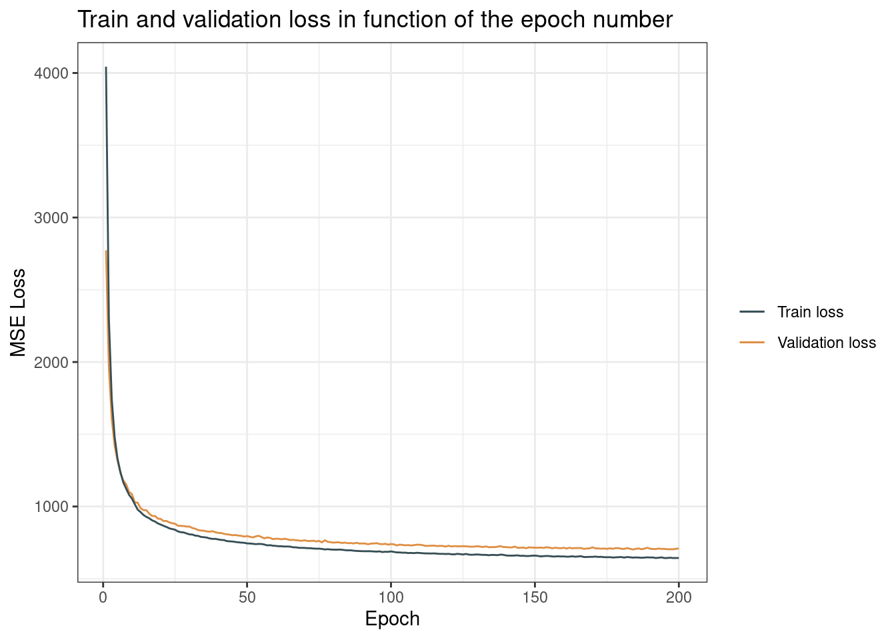
After a run of 200 epochs, the validation and training are still both decreasing: there is no sign of overfitting for now. We can run the model for more epochs.
By analyzing the behavior of the network on the validation set, we can tune all the hyperparameters of the model: number of epochs, learning rate, batch size, layer shapes, … Please do not do it for this homework as this may be too time-consuming. Indeed, let’s keep the parameters defined above and the weights of the model as it was after the last training you did. It does not matter if it is not perfectly trained for the mark.
Let us now focus on assessing the algorithm on the test set. First, compute the reconstructed outputs (forward pass through the auto-encoder) for the test set images. Name your table outputs_test. Print the loss on the test set and comment.
# Compute test loss
outputs_test = model(X_test_torch)
test_loss = criterion(outputs_test, X_test_torch)
print(test_loss.item())## 708.9092407226562outputs_test = model(X_test_torch).detach().numpy() #To detach the results from gradien graph.The MSE loss on the test set is more or less the same as on the training and validation set.
Next, print the five first original and reconstructed test images by running the code below. Comment on the results.
par(mar=c(1,1,1,1))
par(mfrow=c(5,2))
for (idx in 1:5) {
label <- py$y_test[idx]
image(matrix.rotate(py$X_test[idx, ]),
col = grey(level = seq(1, 0, by=-1/255)),
axes=F,
main=label)
image(matrix.rotate(py$outputs_test[idx, ]), #TODO :
col = grey(level = seq(1, 0, by=-1/255)),
axes=F,
main=label)
}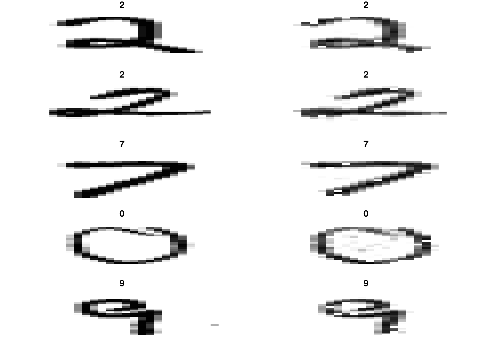
We see that the global shape of each digit is preserved. Yet, the reconstructed images seem to be somehow blurred.
The goal of this last section is to apply t-SNE to the embeddings we get (dimension : 179) in order to visualize them in 2D.
First, compute the embeddings of the test set images (pass through the encoder only).
embedding_tests = model.encoder(X_test_torch)
embedding_tests = embedding_tests.detach().numpy() #To detach the results from gradient graph.Next, apply t-SNE to the embeddings with t-SNE output dimension 2 and the value of perplexity you want (no need to tune the perplexity).
tsne <- Rtsne(py$embedding_tests, dims = 2, perplexity= 30 , verbose=FALSE)Finally, print the 2D t-SNE embeddings as points colored by their true label. Comment on the results.
data.frame(tsne$Y, label = factor(py$y_test)) %>%
ggplot(mapping = aes(x = X1, y = X2, color = label)) +
geom_point() +
theme_bw() +
labs(title ="t-SNE results representation",
color = "True digit",
x = "",
y="",
caption = "Artificial dataset generated from 3 Gaussian distriubtions")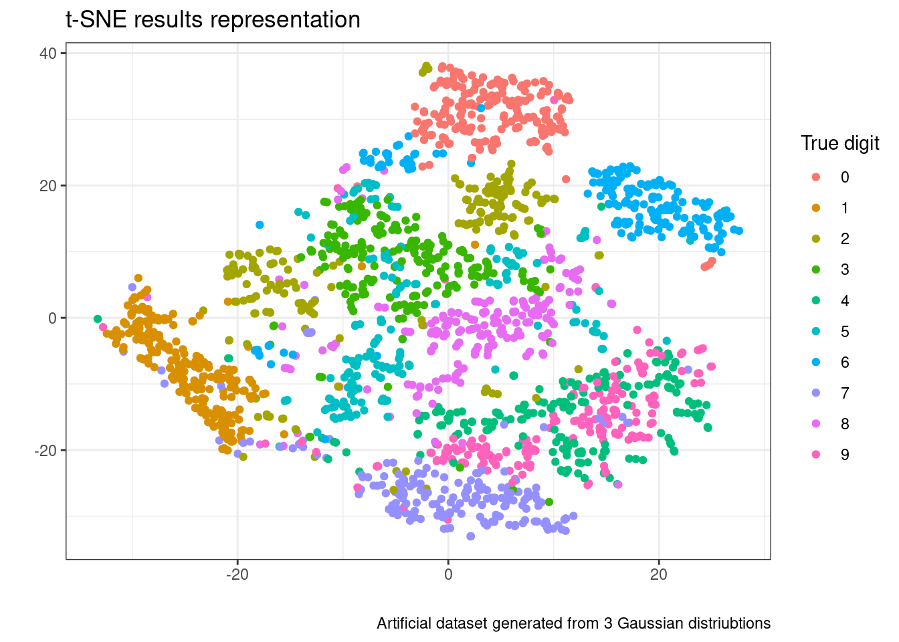
The concatenation of the Auto-Encoder and t-SNE manages to more or less separate the classes in a two-dimension space. Indeed, some classes like 1 or 2 lead to quite compact and isolated clusters. Some classes are still mixed: there is a mix between 4 and 9 for instance. We also guess some outliers.
Through the slides, TD and homework, you should now have a large overview of dimensionality reductions methods (linear and non-linear) that exist. You can have a look at this page which compares several methods and their execution time for the S-curve problem you have seen during the TD. Among them are Isomap and t-SNE that you used during the Homework.